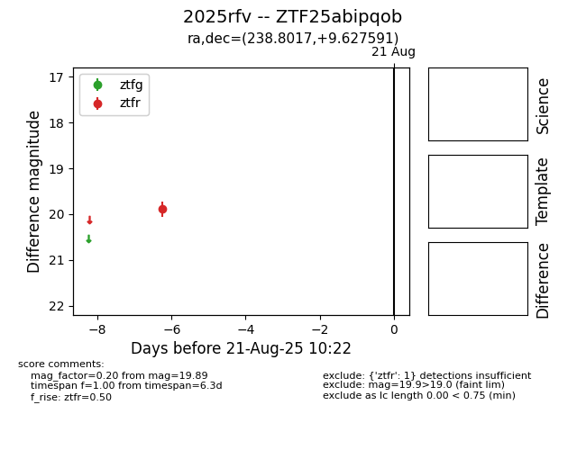

Target 2025rfv at 2025-08-21 10:22, see:
FINK: fink-portal.org/ZTF25abipqob
Lasair: lasair-ztf.lsst.ac.uk/objects/ZTF25abipqob
ALeRCE: alerce.online/object/ZTF25abipqob
TNS: wis-tns.org/object/2025rfv
YSE: ziggy.ucolick.org/yse/transient_detail/2025rfv
alt names
ZTF25abipqob (ztf,alerce)
2025rfv (tns,yse)
coordinates:
equatorial (ra, dec) = (238.8017,+9.62759)
galactic (l, b) = (19.9167,+43.34789)
photometry
last ztfr=19.89
1 ztfr detections
